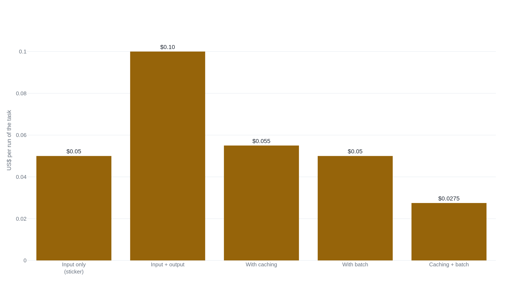

Claude Opus 5 publishes five different per-token prices
Run one fixed task on that model and its real cost swings 3.6-fold across caching, batch tiers, and the output tokens the headline number leaves out.
Why this matters
Every comparison of AI models you read puts a price on it: this one is cheaper, that one costs a fraction as much. The number under those words is almost always dollars per million tokens, taken straight from a lab's pricing page. It is the most quoted figure in the business and among the easiest to misread, because a single published rate stands in for a bill that depends on several choices the rate does not show. By the end of this lesson you can take any "$X per million tokens" claim, see the choices packed inside it, and put three questions to it that decide whether the comparison means anything. The worked example uses one fixed task and real, current Claude Opus 5 prices; every figure is dated to early August 2026, and every figure will drift, because these prices change often.
- 01
- A transformer never reads the letters in strawberry: how the token table that every per-token price is counted against gets built in the first place.
- 02
- Groq's 270 tokens a second and Anyscale's 185 are both true: the same kind of hidden measurement choices, applied to speed instead of dollars.
A price list is not a bill
Open Claude Opus 5's pricing page and count the numbers next to the model. There are five, all per million tokens: $5 to send input, $6.25 or $10 to write that input into a cache, $0.50 to read it back from the cache, and $25 for the output the model writes.1 The Batch API then takes 50 percent off both sides, so the real count of prices is higher still.1 Not one of these is the price of using Opus 5. The bill for a job depends on which of them the job triggers, and in what proportion. These numbers are also dated. Claude Sonnet 5, the cheaper model in the same family, lists $2 and $10 per million today on introductory pricing that Anthropic's own model page says reverts to $3 and $15 on September 1, 2026.2
This lesson runs one fixed task through those choices and watches the cost move. The task never changes: a 10,000-token input, say a document and a question about it, answered in 2,000 tokens, on Claude Opus 5. Every figure below prices that exact task; the only thing that changes is the accounting. A published "$X per million tokens" number is a rate card, not a receipt.
A token is not a fixed unit
Start with what a token is. A model does not read words; it reads tokens, integer codes for chunks of text drawn from a fixed table (this paper's lesson on tokenization covers how that table is built). Two facts about tokens set most of a bill, and the sticker price shows neither.
The first: input and output tokens are not priced alike. On Opus 5, input costs $5 per million and output costs $25 — output is five times the input rate.1 That gap is not a Claude quirk. It holds across every current frontier model.
| Model | Input | Output | Output ÷ input |
|---|---|---|---|
| Claude Opus 5 | $5 | $25 | 5× |
| OpenAI gpt-5 | $1.25 | $10 | 8× |
| Gemini 2.5 Pro | $1.25 | $10 | 8× |
| OpenAI gpt-4o | $2.50 | $10 | 4× |
Why is output dearer? A model reads its whole input in one pass, but it writes output one token at a time, each new token appended to the text and fed back through the network before the next (autoregressive generation is the mechanism). Producing 2,000 output tokens takes 2,000 sequential passes; reading 10,000 input tokens takes one. The price follows the work. Gemini 2.5 Pro above is quoted at its 200,000-token tier; past that length the same sticker rises to $2.50 input and $15 output, a reminder that even the headline rate can be conditional on the size of the prompt.4
The second fact: the token count itself is not fixed. "Tokens" sounds like a unit, but the same text yields different counts under different tokenizers. Anthropic states plainly that its newer tokenizer, used by Claude Opus 4.7 and later and by Claude Fable 5, "produces approximately 30 percent more tokens for the same text" than its earlier one.5 A price quoted per token is only as stable as the tokenizer doing the counting, and a count measured against one model can misprice the same text on another.
The same task, priced five ways
Now price the fixed task. The naive quote uses the input rate alone: 10,000 input tokens at $5 per million is half a cent, $0.05.1 That figure ignores the output entirely.
Count the output and the real-time cost doubles. The 2,000 output tokens at $25 per million add another $0.05, for $0.10.1 The output is only 2,000 of the 12,000 tokens the task moves, a sixth of them, yet it is half the bill, because each output token costs five times an input token. The input-only sticker understated the true cost by exactly half.
From that $0.10 real-time cost, each discount moves the number for one nameable reason. Reuse the same 10,000-token context across calls and prompt caching applies. A cached read of the input costs $0.50 per million instead of $5, a tenth of the rate,16 which drops the task to $0.055. The input line has nearly vanished, and the output now carries the bill. Send the same task through the Batch API instead, accepting asynchronous rather than real-time processing, and both rates halve to $2.50 and $12.50 per million. That drops the task to $0.05.1 Do both at once, with batch halving the already-cached read to $0.25 per million, and the task bottoms out at $0.0275.16

The same task, on the same model, at the same published prices, costs anywhere from $0.0275 to $0.10 — the accounting is the only variable. The real-time cost of $0.10 is 3.6 times the fully optimized $0.0275. Notice the coincidence in the middle: the input-only sticker, $0.05, happens to equal the batch total, so a sticker can land on the right number for the wrong reason.
What a low sticker cannot promise
All of that was one model. Put two models side by side and the sticker starts making promises it cannot keep.
Take a real comparison. On a coding benchmark run by the vendor MindStudio, Kimi K2's published per-token price is about half a GPT-5.1-class model's. Ranked on the sticker, Kimi K2 is the cheap option by a wide margin. Measured per completed task, it cost about $0.95 against the GPT model's $1.04, near parity rather than the half-price win the sticker advertised, because Kimi K2 took roughly twice as many tokens to finish the same work.7 Half the price times twice the tokens nets out. A buyer who switched to bank a 50 percent saving banked about nine.
Nothing was wrong with either published price. The sticker simply does not carry the thing the buyer needed: how many tokens this workload spends to reach a usable answer. Two more hidden quantities do the same damage.
The first is reasoning tokens. A reasoning model works through a problem in tokens the user never sees, and OpenAI states that these are "billed as output tokens" even though they are not returned.8 Output is the expensive side, so an invisible pile of it lands on the bill: CloudZero puts the effect at 3 to 10 times the naive cost, depending on how hard the task makes the model think.9 Compare two models on their posted input rates and the reasoning one can cost several times more per answer while looking identical on the page.
The second is the discounts themselves. The $0.055 and $0.0275 figures above hold only under conditions: caching helps only when a workload reuses the same prefix, and batch only when the work can wait.16 An interactive, unique-prompt workload gets neither and pays the full $0.10. A vendor quoting the cached or batch rate is being exactly as selective as one quoting the input-only sticker.
- What is the input-to-output split, and does the quote count output at all?
- Which tokenizer produced the count, and does the model spend hidden reasoning tokens on top of it?
- Do caching and batch actually apply here: repeated prefixes, and work that can wait?
The takeaway
A "$X per million tokens" price is a rate card, not a receipt. The same 10,000-in, 2,000-out task on Claude Opus 5 costs anywhere from $0.0275 to $0.10 without the price list changing a digit. That 3.6-fold swing turns only on whether you count output, whether caching and batch apply, and which tokenizer did the counting. That is why a lower sticker cannot promise a lower bill. Kimi K2's half-price sticker netted out near the price of the model it was meant to undercut, and a reasoning model can bill several times its posted rate in tokens no one sees. So when the next comparison ranks models by price, put the three questions to it (output split, tokenizer and hidden tokens, whether the discounts apply) before you believe the order. The sticker is where a cost estimate starts, not where it ends.
- 01
- Simon Willison, LLM pricing notes: runs real tasks through current model prices as each model ships, with the token counts shown.
- 02
- SemiAnalysis, "AI Value Capture: The Shift To Model Labs": how the gap between sticker and blended per-token cost plays out across a lab's whole business.